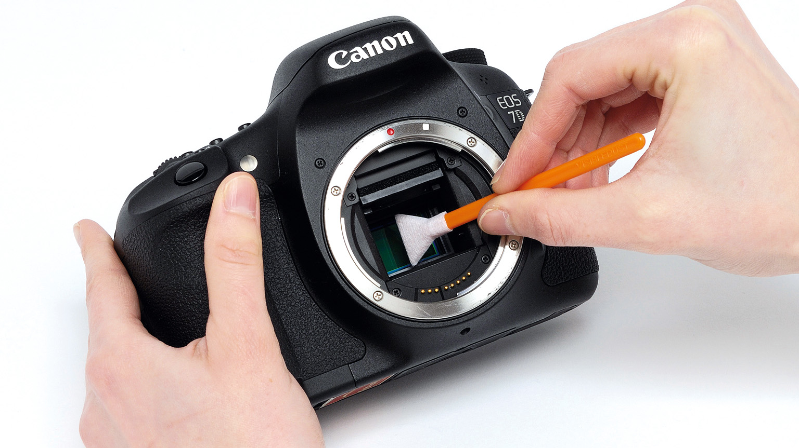
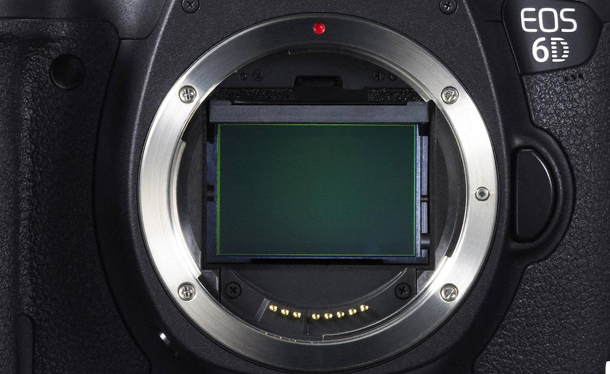
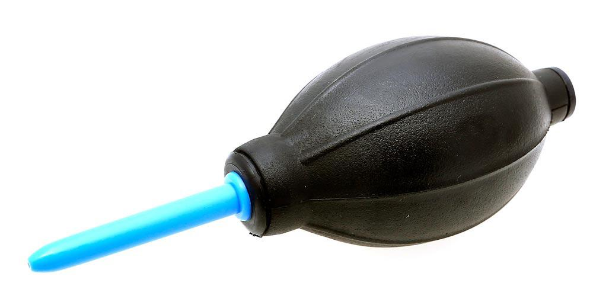
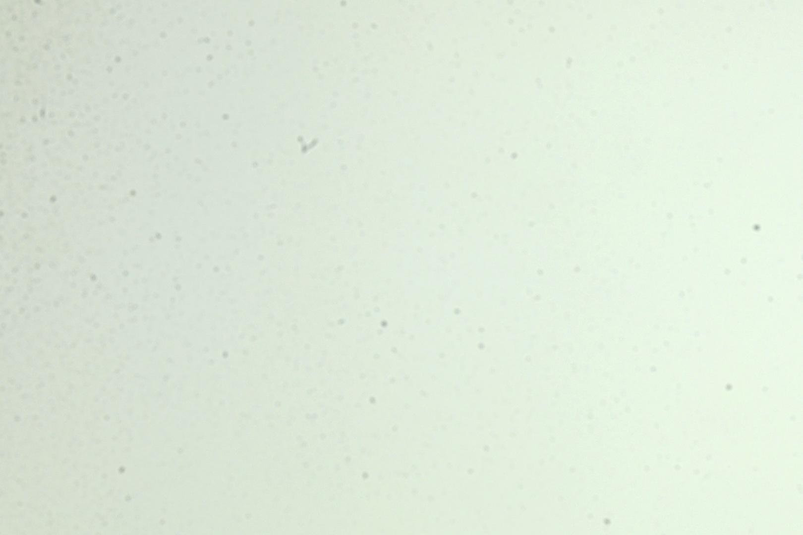
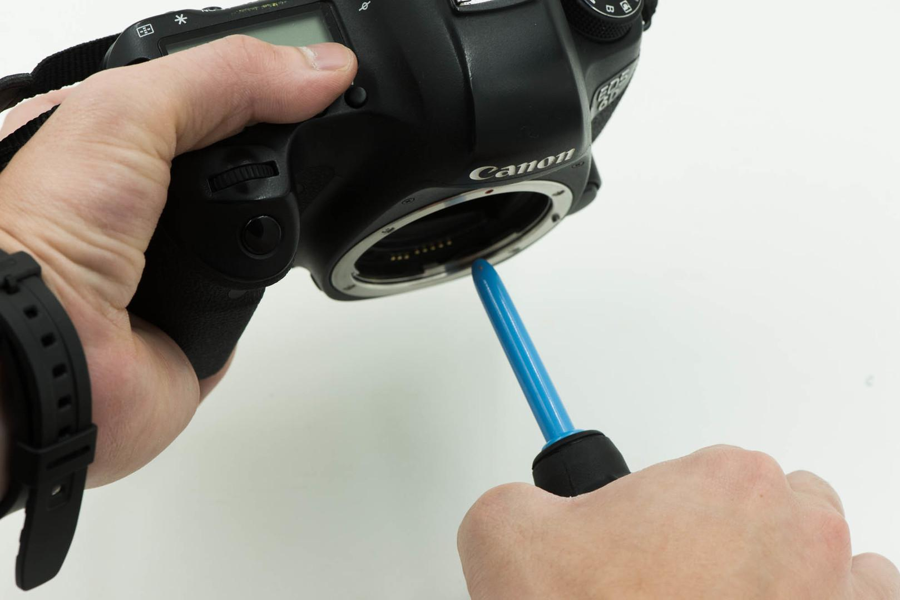
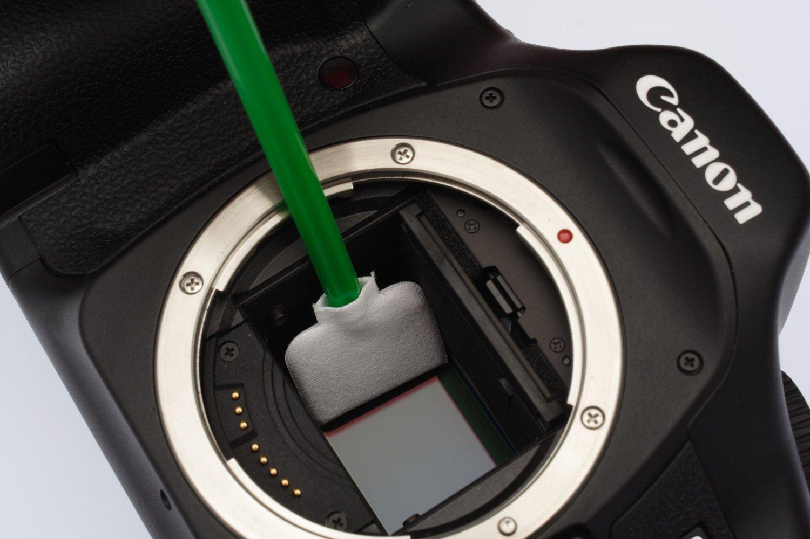

Cleaning of DSLR matrix sensor
How to clean a matrix sensor in DSLR.
All DSLR cameras have one problem in common. Their matrix (the light-sensitive sensor that captures the image) becomes dirty over time. Dust, small debris, moisture, grease from adjacent mechanical elements - all over time lead to the appearance of noticeable black dots in the photo. If you begin to notice this in your pictures, then it's time to clean the matrix.
All manufacturers advise to perform this operation in service centers, but what if you do not want to pay for such a simple service or if there is no service center near you? You can do it yourself. It's not difficult at all.
What do you need?
In the simplest case, you need only a pear. It is called a " air cleaner " and can cost from $ 10In more complex cases, you will need a sensor cleaning swab. In addition, EClipse E2 cleaning fluid is required; sensor cleaning swabs are often sold with one. NEVER USE alcohol, thinner or nail polish remover
What to do?
First you need to take a test shot to see how bad things are. Hold the aperture for minimum to maximum (for different lenses the value will be different, but the higher it is, the better - for example, F22) and photograph a uniform light background. Open Notepad on your monitor, expand it to full screen and shoot. And then carefully examine the picture to understand exactly where the dust is on the matrix. It will look something like this.
this is how dust and other debris looks like on the matrix
If you notice one small speck in the very corner of the frame - you don't have to worry, such things are eliminated in one click in any RAW converter. But if there is a lot of dust, and if it is in the central part of the frame, the matrix sensor needs to be cleaned.
Set the camera to the sensor cleaning mode (mirror up, shutter open) - different manufacturers have different methods. Be sure to find this item in the instructions for your camera and do it strictly as it says there. But keep in mind that under the item "Matrix cleaning" in DSLRs, most often there is a waste cleaning mode. If your camera has it, you can use it a couple of times in a row and repeat the test shot. If the picture has not changed, go to cleaning.
Blowing the matrix with a cleaner
Remove the lens. Turn on the camera cleaning mode, take a blower and blow through the sensor thoroughly, holding the camera with the mount down. This will cause the dust to fall down and leave the camera body. Then you can repeat the test frame. If the dust has disappeared, you can stop there.
If the matrix still remains dirty, move on to heavy artillery. We take cleaning swabs, slightly moisten it with EClipse E2 liquid and begin to smoothly and carefully carry it over the matrix in one direction. Ideally, the cleaning swabs should match the width of the die so that you can “sweep” the entire area in one swipe. The mop should be pressed firmly, but without excessive force. The correct cleaning fluid does not leave streaks and evaporates quickly.
After this procedure, you can repeat the step with purging the die. Then we assemble the camera, take a test shot and look at the result. In especially difficult cases, all this will have to be repeated several times.
Is that all?
It's all! As you can see, nothing complicated. But there are also special cases. For example, in Nikon D600, the matrix is gradually covered with small drops of oil. This is a known defect in this model, but in a branded service center you should clean the sensor for free. And while many cameras have a self-cleaning sensor function, none of them can completely eliminate the need to clean the sensor manually. The presence of the cleaning function will, at best, extend the interval between cleanings.